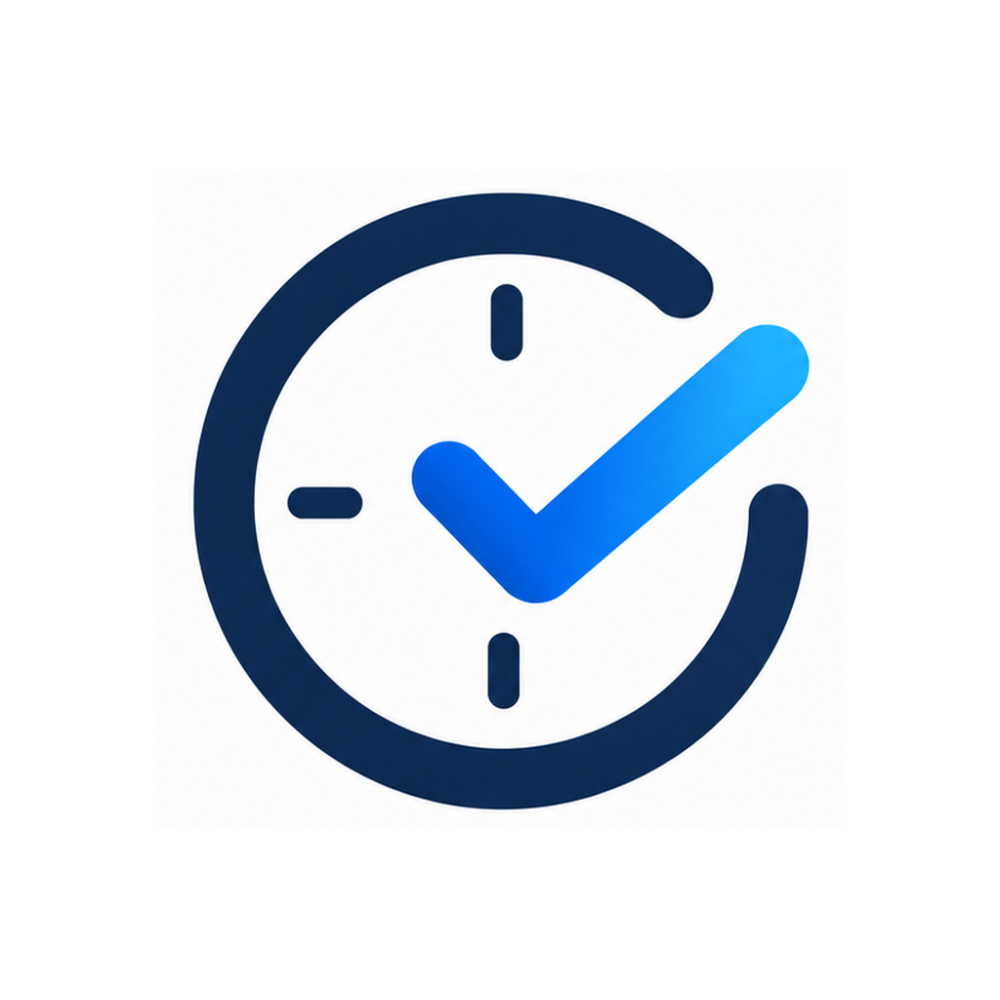

CareHrs
A private hours organizer and timesheet keeper for caregivers. Everything stays on your device.
CareHrs is independent and is not affiliated with IHSS or any government agency.

A private hours organizer and timesheet keeper for caregivers. Everything stays on your device.
CareHrs is independent and is not affiliated with IHSS or any government agency.